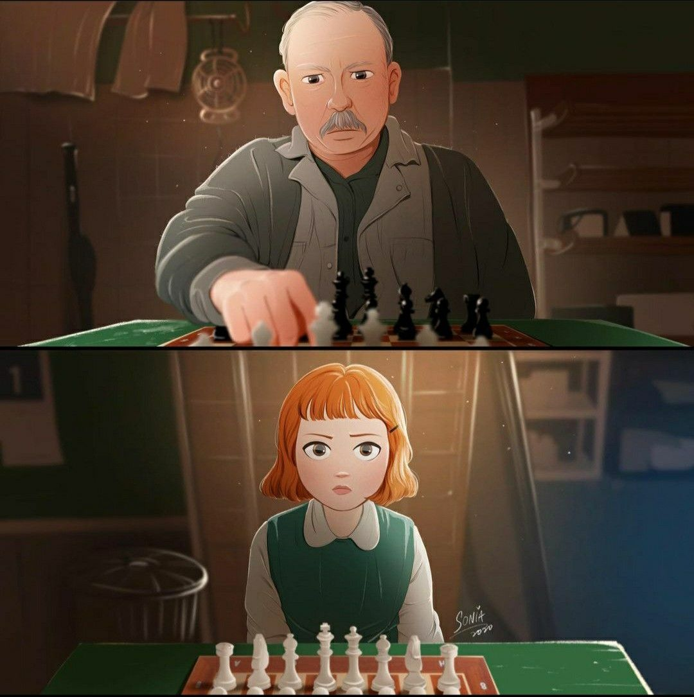
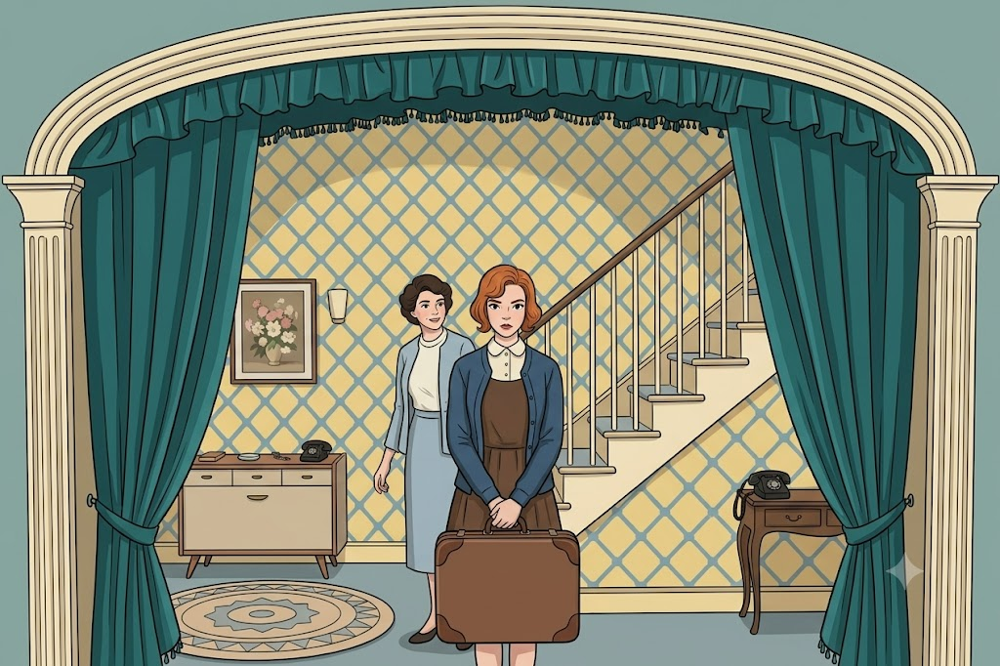
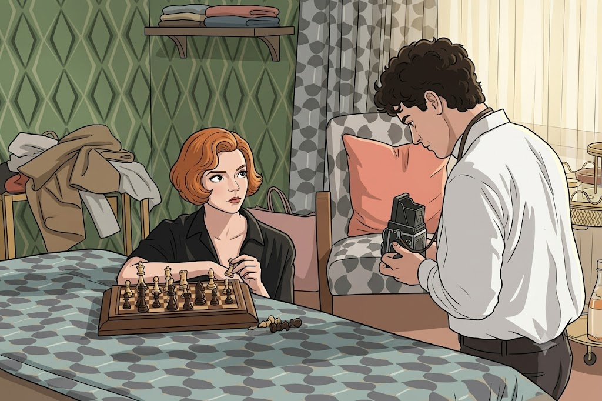
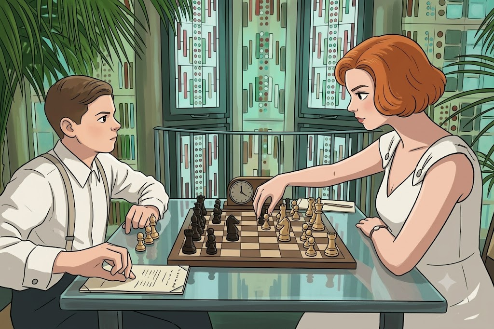
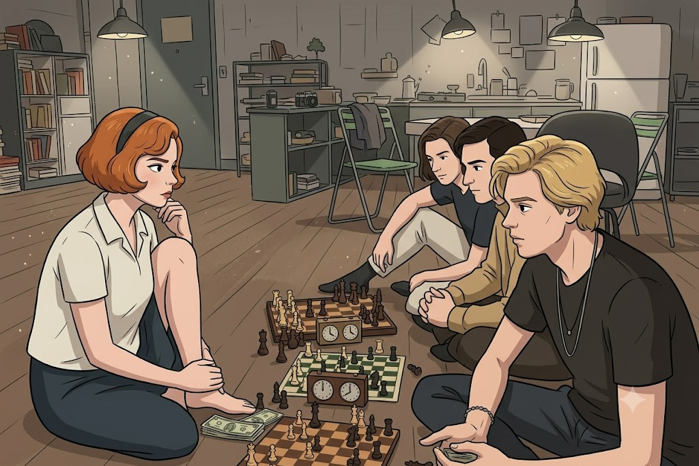
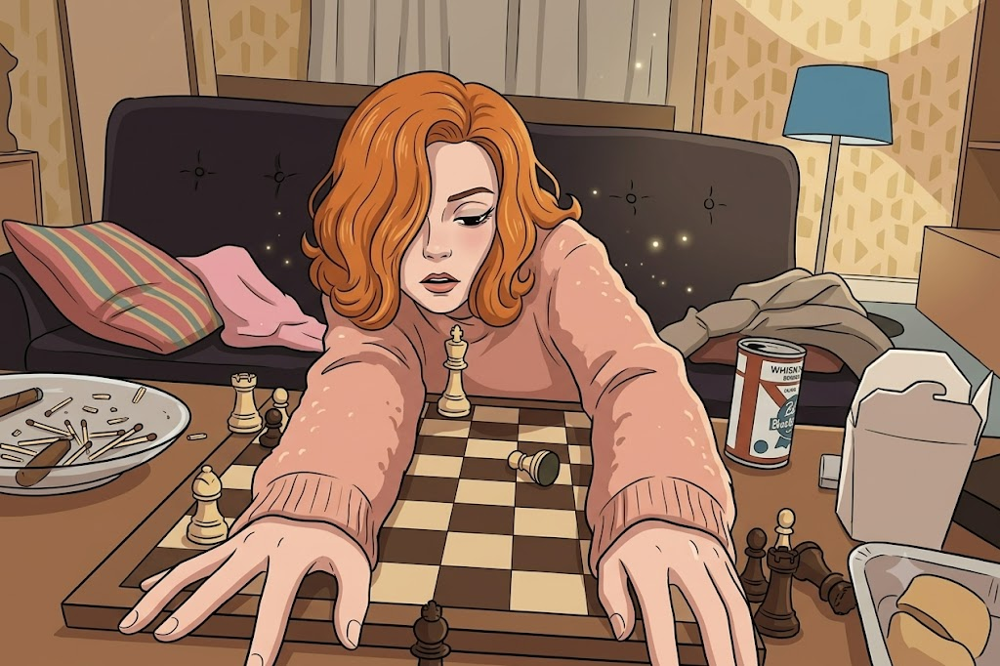

Сериал туралы
«Ход королевы» (The Queen's Gambit) — Уолтер Тевистің 1983 жылғы аттас романына негізделген Netflix мини-сериалы. Сериал 2020 жылы жарыққа шығып, әлем бойынша феноменге айналды.
Оқиға жетім қыз Бет Хармонның өмірі төңірегеінде өрбиді. Ол өзінің шахматқа деген таңғажайып талантын ашып, еркектер үстемдік еткен шахмат әлемінде ең үздік атануға ұмтылады.

Бөлімдер






Қызықты деректер
- Шахмат бумы: Сериал шыққаннан кейін бүкіл әлемде Google-де шахмат ойнауды үйрену туралы іздеулер саны 250%-ға өскен.
- Кәсіби көмек: Сериалдағы шахмат партияларының шынайы болуы үшін атақты гроссмейстер Гарри Каспаров кеңесші болған.
- Рекорд: Экранға шыққан алғашқы 28 күнде сериалды 62 миллион адам тамашалап, Netflix тарихындағы ең танымал мини-сериал атанды.